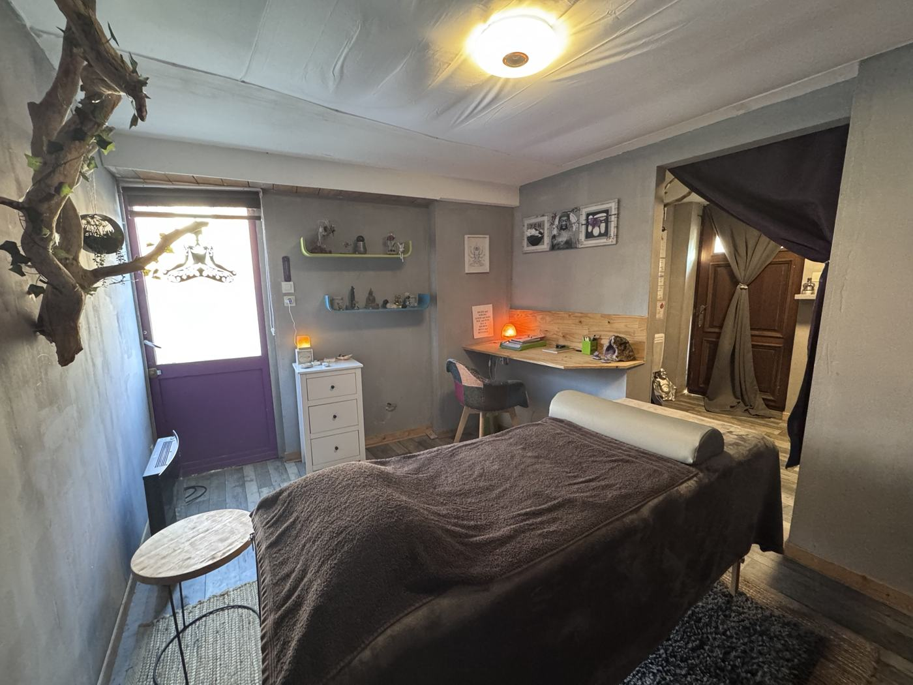
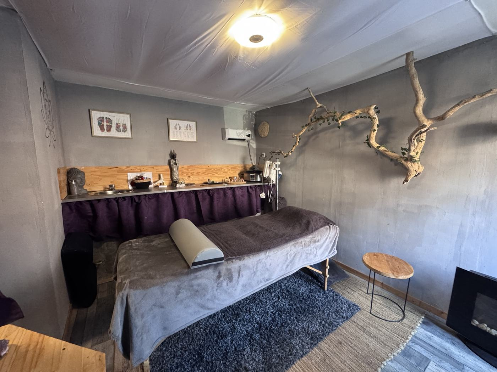
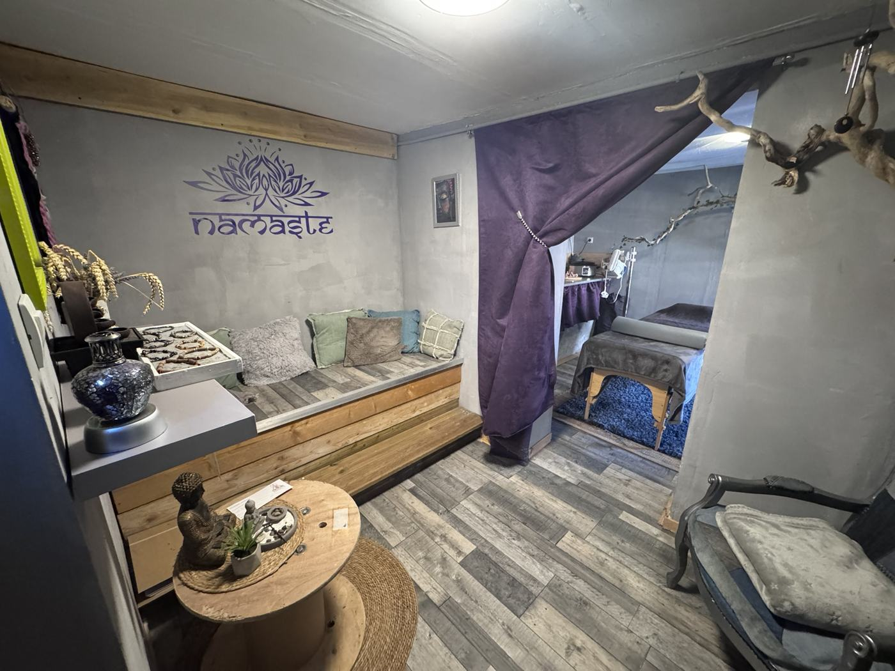
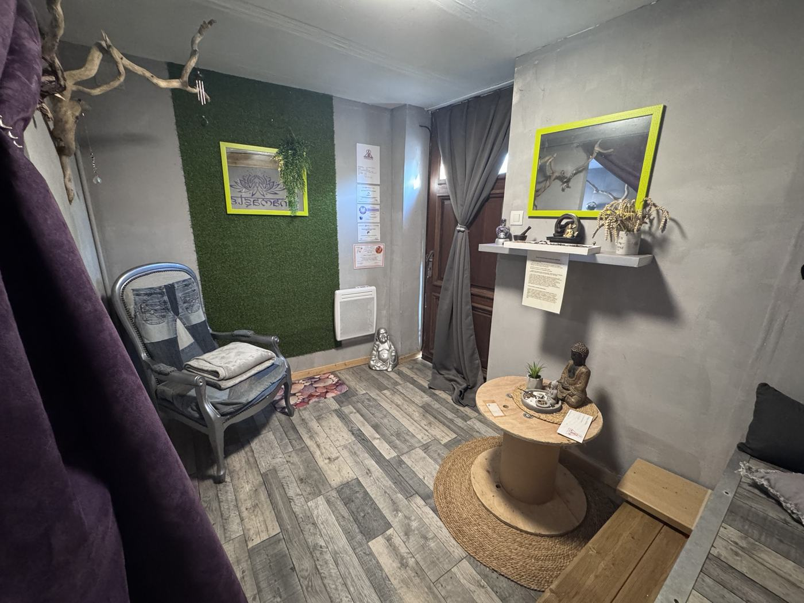
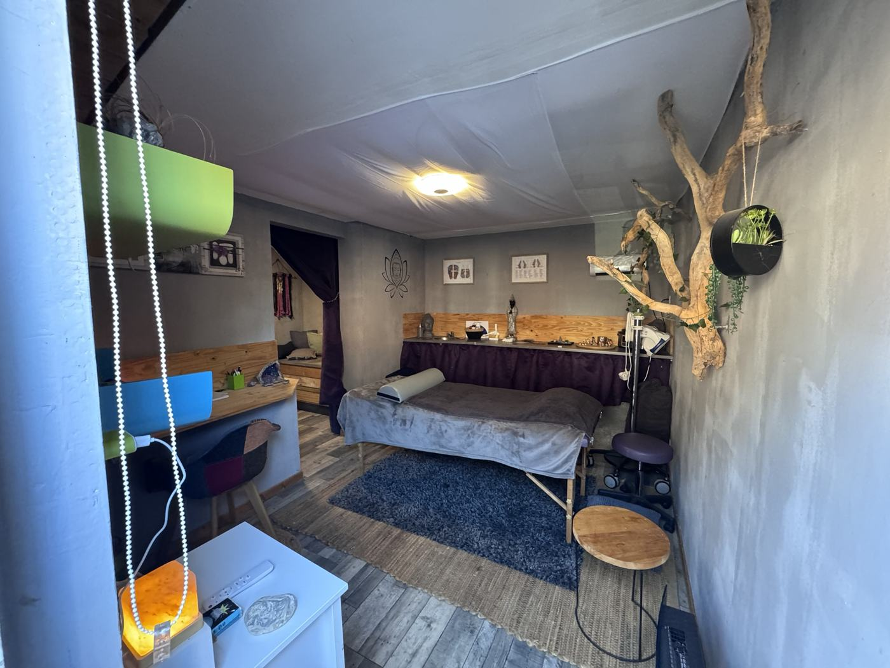

Lahochi
Une énergie douce, transmise par l'apposition des mains, pour rééquilibrer le corps et l'esprit.
Prendre soin de soi…
Des soins énergétiques et naturels pour retrouver l'équilibre, la sérénité, et renforcer le lien avec vos compagnons. Au cabinet à Carnières, près de Cambrai.
Soins en cabinet uniquement, sur rendez-vous.

votre bulle de douceur ♡Les soins
Chaque séance commence par un temps d'échange pour comprendre vos attentes. Elle dure entre 45 minutes et une heure.
Une énergie douce, transmise par l'apposition des mains, pour rééquilibrer le corps et l'esprit.
Un toucher léger sur 32 points de la tête pour libérer les blocages, apaiser le mental et retrouver de la légèreté.
La stimulation des zones réflexes du pied pour une détente profonde et un bien-être global. Très appréciée des enfants agités ou qui dorment mal.
Le magnétisme traditionnel chinois et le massage Tuina du dos, avec ou sans ventouses.
Près d'une heure de douceur et de chaleur sur tout le corps, pour relâcher les tensions et souffler.
Retrouver votre énergie et votre alignement intérieur grâce au travail énergétique.
Une maison lourde, un lieu où l'on dort mal : je libère votre lieu de vie.
Parce qu'ils ressentent… comme nous
Un comportement qui change, un deuil, un déménagement, une arrivée dans la famille : votre chien, votre chat ou votre cheval vit lui aussi ces moments. La communication animale vous aide à mieux le comprendre.
Le lien qui nous unit est une force… prenons-en soin.
Qui suis-je
Infirmière puis puéricultrice, j'ai passé plus de vingt ans auprès des bébés et des enfants, à l'hôpital puis en crèche. C'est là que j'ai découvert la réflexologie plantaire, pour soulager les petits maux des tout-petits.
Praticienne en soins énergétiques depuis 2019 et passeuse de lieux, toujours formée en présentiel, j'accompagne aujourd'hui les personnes de tous âges, et leurs animaux, vers la détente et le lâcher-prise.
Namasté + zen = Namazen
Le cabinet
Les soins ont lieu au cabinet de Carnières : lumière douce, bois flotté, plaids et coin d'accueil pour prendre le temps avant et après la séance.




Formations et certificats
Avant les soins énergétiques, j'ai été infirmière (1998) puis puéricultrice (2002). Mes certificats sont affichés au cabinet.
« Bien-être et détente ». 21 heures de formation et épreuves pratiques réussies.
42 heures de formation : magnétisme, pose des ventouses, Tuina du dos et bases de la réflexologie plantaire chinoise.
Formation suivie avec succès, certificat de pratique.
Technique de massage pierres chaudes, certificat n° 0002/2022.
Je suis également formée à l'Access Bars, au Lahochi, à la communication animale et au travail de passeuse de lieux.
Ma fille Charlotte, 9 ans, avait beaucoup de difficultés d'endormissement. Dès la première séance, elle s'est relaxée et s'est même endormie. Elle raconte à ses copines qu'elle se fait masser les pieds avec de jolies lumières et de la musique douce. Virginie est très douce et très à l'écoute.
Quasi une heure de douceur chaude sur tout le corps. Je recommande pour celles et ceux qui ont besoin de douceur, de chaleur, de réconfort, de relaxation… et grand besoin de souffler.
Des doigts magiques ! Je recommande !
Toiletteuse canin, j'avais une douleur atroce au poignet à force de faire des coupes. Elle a réussi à me soulager et m'a apaisée en même temps. Je lui apporte toute ma confiance !
Je dors ! Enfin ! Merci !
Super soins ! On sort transformé. Très bonne professionnelle, je la recommande vivement.
Je suis très, très satisfaite, un bien fou. Son travail est impressionnant.
Merci Virginie pour ce moment agréable ! Bientôt un autre rendez-vous.
Pour les adultes, les enfants et les nourrissons
Le pied compte des milliers de terminaisons nerveuses. En stimulant ses zones réflexes par des pressions précises, la réflexologie invite le corps à se détendre en profondeur et à retrouver son équilibre. C'est le soin par lequel tout a commencé pour moi, puéricultrice de métier.
Pour toute personne qui a besoin de souffler : stress, fatigue, sommeil difficile, tensions. Elle convient très bien aux enfants agités ou qui ont du mal à s'endormir, et aux tout-petits.
Pour apaiser un mental qui tourne en boucle
Un toucher très léger sur 32 points de la tête, appelés « barres ». Le soin aide à relâcher les pensées et les schémas qui encombrent, pour retrouver calme et légèreté.
Pour les adultes comme pour les enfants (séance plus courte). Les personnes qui le reçoivent parlent souvent d'un meilleur sommeil, de moins de stress et d'une sensation de légèreté.
Une énergie douce
Le Lahochi est un soin énergétique par apposition des mains. Doux et enveloppant, il aide le corps et l'esprit à se rééquilibrer et à relâcher les tensions.
Pour les personnes fatiguées, stressées ou en période de changement, qui ont besoin de se poser et de se recentrer. Il convient à tous les âges.
Retrouver son alignement
Les chakras sont les sept centres d'énergie du corps, de la base de la colonne au sommet de la tête. Ce soin énergétique, par les mains, aide à les rééquilibrer pour retrouver énergie et sérénité.
Pour les personnes qui se sentent « décalées », sans énergie, ou qui traversent une période chargée en émotions.
Parce qu'ils ressentent… comme nous
À partir d'une simple photo, je me connecte à votre animal pour lui transmettre vos questions et recueillir ce qu'il ressent. Pas besoin de vous déplacer.
Pour les chiens, chats, chevaux et tous les compagnons. Utile lors d'un changement de comportement, d'un déménagement, d'une arrivée dans la famille, d'un deuil, ou simplement pour mieux se comprendre.
Pour votre maison
Une ambiance lourde, une pièce où l'on ne se sent pas bien, un sommeil agité depuis un emménagement : un lieu garde parfois une mémoire. Le travail de passeuse de lieux aide à libérer votre lieu de vie.
Pour une maison, un appartement, un commerce, ou avant d'emménager dans un nouveau lieu.
Le magnétisme traditionnel chinois
Je suis certifiée praticienne en magnétisme traditionnel chinois (IHM-Nord, 42 heures). Je propose le magnétisme par les mains, le massage Tuina du dos, avec ou sans pose de ventouses, et des séances de magnétisme à distance à partir d'une photo.
Un massage traditionnel chinois énergique et dynamique, et non un massage relaxant : pressions, étirements, pétrissages et mobilisations le long du dos. Les ventouses peuvent compléter le soin si vous le souhaitez.
Par l'imposition des mains, des passes et le souffle, le magnétisme accompagne le corps vers la détente et l'équilibre. Il convient à tous les âges.
Douceur, chaleur, réconfort
Des pierres de basalte chauffées glissent sur le corps et restent posées sur certaines zones. Leur chaleur détend les muscles en profondeur et invite au lâcher-prise. Je suis formée à cette technique par la Sautreau Academy (2022).
Pour celles et ceux qui ont besoin de douceur, de chaleur et de réconfort, et surtout de souffler.
Quasi une heure de douceur chaude sur tout le corps.
Marie G.
Virginie Gorczinski-Petit, entrepreneure individuelle, nom commercial Namazen.
Adresse : 3 rue de l'Ange, 59217 Carnières
SIREN : 851 761 429
Téléphone : 06 33 65 88 44 · E-mail : namazen59@free.fr
Directrice de la publication : Virginie Gorczinski-Petit.
MackerProd · mackerprod.fr
GitHub, Inc. (GitHub Pages), 88 Colin P. Kelly Jr. Street, San Francisco, CA 94107, États-Unis · github.com
Les textes et les photos de ce site appartiennent à Namazen. Toute reproduction sans accord écrit est interdite.
Ce site ne contient ni formulaire, ni outil de mesure d'audience, ni cookie publicitaire. Les messages que vous m'envoyez par SMS, WhatsApp ou e-mail servent uniquement à organiser vos rendez-vous et ne sont jamais transmis à des tiers.
Le site utilise les polices de caractères Google Fonts : à l'affichage, votre adresse IP est transmise à Google pour charger ces polices.
Conformément au RGPD, vous pouvez demander l'accès, la rectification ou la suppression de vos données en écrivant à namazen59@free.fr.
Les soins proposés relèvent du bien-être et de la détente. Ils ne remplacent en aucun cas une consultation médicale ou vétérinaire, ni un traitement en cours.